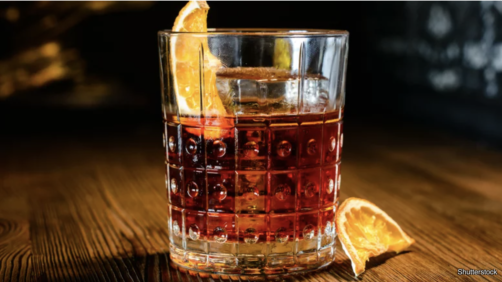

Scorpio: The Negroni

To represent the scorpion of the zodiac, we're going for a drink whose flavor profile is as complex as their personality. Be warned, however, this drink has a sting to it and is not for the timid.
Ingredients
- 1 ounce gin
- 1 ounce Campari
- 1 ounce sweet vermouth
- Ice
- Garnish: orange peel or slice
Steps
- Add the gin, Campari and sweet vermouth to a mixing glass filled with ice, and stir until well-chilled.
- Strain into a rocks glass filled with large cubes.
- Garnish with orange.